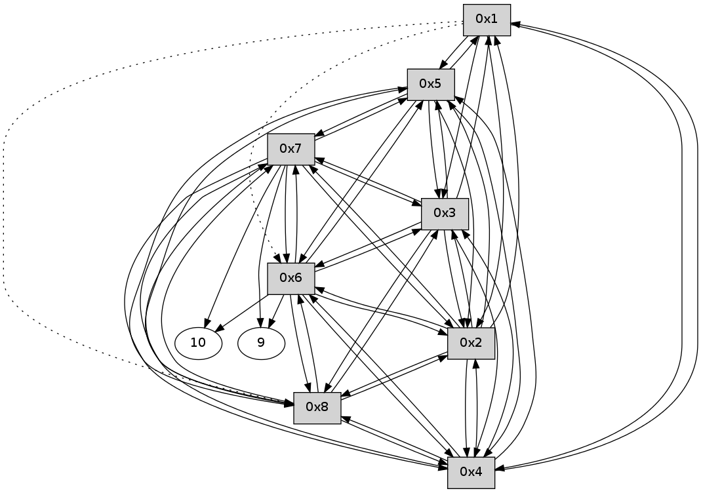

>> << IDX [start] -100 -25 -5 +0 +5 +25 +100 [225.529465914]
 Previous packets
----------------------------------------------------------------------
220.012505 beacon01(11f6) #0 coord=01,02,03,04,05,06,07,08,0a,09 cycle=688.0ms assoc
-- color-indic=0 64 3e 01
220.022680 beacon02(11f6) #0 coord=01,02,03,04,05,06,07,08,0a,09 cycle=688.0ms assoc 64 ad 30
220.032641 beacon03(11f6) #0 coord=01,02,03,04,05,06,07,08,0a,09 cycle=688.0ms assoc 64 d7 7d
220.042640 beacon04(11f6) #0 coord=01,02,03,04,05,06,07,08,0a,09 cycle=688.0ms assoc 64 a0 97
220.052640 beacon05(11f6) #0 coord=01,02,03,04,05,06,07,08,0a,09 cycle=688.0ms assoc 64 da da
220.072640 beacon07(11f6) #0 coord=01,02,03,04,05,06,07,08,0a,09 cycle=688.0ms assoc 64 2e 40
220.082645 beacon08(11f6) #0 coord=01,02,03,04,05,06,07,08,0a,09 cycle=688.0ms assoc 64 ab d1
220.256066 [Hello(1): seq=87 sym=5,3,2,4 asym=8,6 sysInfo= stat=5:2,0,0,0/3:4,0,0,0/2:14,0,0,0/4:3,0,0,0/8:5,0,0,0/6:3,0,0,0]
----------------------------------------------------------------------
220.800642 beacon01(11f6) #0 coord=01,02,03,04,05,06,07,08,0a,09 cycle=688.0ms assoc
-- color-indic=0 64 99 71
220.810805 beacon02(11f6) #0 coord=01,02,03,04,05,06,07,08,0a,09 cycle=688.0ms assoc 64 0a 40
220.820777 beacon03(11f6) #0 coord=01,02,03,04,05,06,07,08,0a,09 cycle=688.0ms assoc 64 70 0d
220.830776 beacon04(11f6) #0 coord=01,02,03,04,05,06,07,08,0a,09 cycle=688.0ms assoc 64 07 e7
220.840777 beacon05(11f6) #0 coord=01,02,03,04,05,06,07,08,0a,09 cycle=688.0ms assoc 64 7d aa
220.850777 beacon06(11f6) #0 coord=01,02,03,04,05,06,07,08,0a,09 cycle=688.0ms assoc 64 f3 7d
220.860778 beacon07(11f6) #0 coord=01,02,03,04,05,06,07,08,0a,09 cycle=688.0ms assoc 64 89 30
220.870782 beacon08(11f6) #0 coord=01,02,03,04,05,06,07,08,0a,09 cycle=688.0ms assoc 64 0c a1
220.912614 [Hello(5): seq=87 sym=1,2,7,6,3,8,4 sysInfo= stat=1:7,0,0,0/2:0,0,0,0/7:10,0,0,0/6:0,0,0,0/3:1,0,0,0/8:4,0,0,0/4:4,0,0,0]
220.962672 [Hello(7): seq=87 sym=10,5,6,8,3,2,4,9 sysInfo= stat=10:7,0,0,0/5:14,0,0,0/6:6,0,0,0/8:6,0,0,0/3:6,0,0,0/2:0,0,0,0/4:15,0,0,0/9:1,0,0,0]
220.967180 [Hello(4): seq=87 sym=1,2,5,6,3,8,7 sysInfo= stat=1:6,0,0,0/2:1,0,0,0/5:4,0,0,0/6:15,0,0,0/3:3,0,0,0/8:3,0,0,0/7:1,0,0,0]
220.990625 [Hello(2): seq=87 sym=1,7,5,3,8,4,6 sysInfo= stat=1:6,0,0,0/7:9,0,0,0/5:3,0,0,0/3:2,0,0,0/8:4,0,0,0/4:3,0,0,0/6:11,0,0,0]
221.011590 [Hello(8): seq=87 sym=2,7,5,6,3,4 sysInfo= stat=2:6,0,0,0/7:14,0,0,0/5:14,0,0,0/6:6,0,0,0/3:10,0,0,0/4:3,0,0,0]
221.034674 [Hello(3): seq=87 sym=1,2,7,5,6,8,4 sysInfo= stat=1:7,0,0,0/2:0,0,0,0/7:10,0,0,0/5:3,0,0,0/6:0,0,0,0/8:4,0,0,0/4:6,0,0,0]
----------------------------------------------------------------------
221.588781 beacon01(11f6) #0 coord=01,02,03,04,05,06,07,08,0a,09 cycle=688.0ms assoc
-- color-indic=0 64 25 74
221.598952 beacon02(11f6) #0 coord=01,02,03,04,05,06,07,08,0a,09 cycle=688.0ms assoc 64 b6 45
221.608917 beacon03(11f6) #0 coord=01,02,03,04,05,06,07,08,0a,09 cycle=688.0ms assoc 64 cc 08
221.618916 beacon04(11f6) #0 coord=01,02,03,04,05,06,07,08,0a,09 cycle=688.0ms assoc 64 bb e2
221.628916 beacon05(11f6) #0 coord=01,02,03,04,05,06,07,08,0a,09 cycle=688.0ms assoc 64 c1 af
221.648917 beacon07(11f6) #0 coord=01,02,03,04,05,06,07,08,0a,09 cycle=688.0ms assoc 64 35 35
221.658921 beacon08(11f6) #0 coord=01,02,03,04,05,06,07,08,0a,09 cycle=688.0ms assoc 64 b0 a4
221.727934 [Hello(1): seq=88 sym=5,3,2,4 asym=8,6 sysInfo= stat=5:3,0,0,0/3:5,0,0,0/2:15,0,0,0/4:4,0,0,0/8:6,0,0,0/6:3,0,0,0]
----------------------------------------------------------------------
222.376918 beacon01(11f6) #0 coord=01,02,03,04,05,06,07,08,0a,09 cycle=688.0ms assoc
-- color-indic=0 64 e1 7a
222.387090 beacon02(11f6) #0 coord=01,02,03,04,05,06,07,08,0a,09 cycle=688.0ms assoc 64 72 4b
222.397053 beacon03(11f6) #0 coord=01,02,03,04,05,06,07,08,0a,09 cycle=688.0ms assoc 64 08 06
222.407053 beacon04(11f6) #0 coord=01,02,03,04,05,06,07,08,0a,09 cycle=688.0ms assoc 64 7f ec
222.417055 beacon05(11f6) #0 coord=01,02,03,04,05,06,07,08,0a,09 cycle=688.0ms assoc 64 05 a1
222.427054 beacon06(11f6) #0 coord=01,02,03,04,05,06,07,08,0a,09 cycle=688.0ms assoc 64 8b 76
222.437054 beacon07(11f6) #0 coord=01,02,03,04,05,06,07,08,0a,09 cycle=688.0ms assoc 64 f1 3b
222.447059 beacon08(11f6) #0 coord=01,02,03,04,05,06,07,08,0a,09 cycle=688.0ms assoc 64 74 aa
222.485332 [Hello(5): seq=88 sym=1,2,7,6,3,8,4 sysInfo= stat=1:8,0,0,0/2:1,0,0,0/7:11,0,0,0/6:0,0,0,0/3:2,0,0,0/8:5,0,0,0/4:5,0,0,0]
222.520317 [Hello(6): seq=88 sym=10,7,5,3,8,4,2,9 sysInfo= stat=10:15,0,0,0/7:14,0,0,0/5:8,0,0,0/3:15,0,0,0/8:6,0,0,0/4:6,0,0,0/2:14,0,0,0/9:14,0,0,0]
222.531270 [Hello(2): seq=88 sym=1,7,5,3,8,4,6 sysInfo= stat=1:7,0,0,0/7:9,0,0,0/5:4,0,0,0/3:3,0,0,0/8:4,0,0,0/4:3,0,0,0/6:12,0,0,0]
222.534678 [Hello(4): seq=88 sym=1,2,5,6,3,8,7 sysInfo= stat=1:7,0,0,0/2:2,0,0,0/5:5,0,0,0/6:0,0,0,0/3:4,0,0,0/8:3,0,0,0/7:2,0,0,0]
222.580921 [Hello(8): seq=88 sym=2,7,5,6,3,4 sysInfo= stat=2:7,0,0,0/7:15,0,0,0/5:15,0,0,0/6:7,0,0,0/3:11,0,0,0/4:3,0,0,0]
222.584812 [Hello(3): seq=88 sym=1,2,7,5,6,8,4 sysInfo= stat=1:8,0,0,0/2:1,0,0,0/7:10,0,0,0/5:4,0,0,0/6:1,0,0,0/8:4,0,0,0/4:6,0,0,0]
----------------------------------------------------------------------
223.165055 beacon01(11f6) #0 coord=01,02,03,04,05,06,07,08,0a,09 cycle=688.0ms assoc
-- color-indic=0 64 5d 7f
223.175208 beacon02(11f6) #0 coord=01,02,03,04,05,06,07,08,0a,09 cycle=688.0ms assoc 64 ce 4e
223.185191 beacon03(11f6) #0 coord=01,02,03,04,05,06,07,08,0a,09 cycle=688.0ms assoc 64 b4 03
223.195192 beacon04(11f6) #0 coord=01,02,03,04,05,06,07,08,0a,09 cycle=688.0ms assoc 64 c3 e9
223.205191 beacon05(11f6) #0 coord=01,02,03,04,05,06,07,08,0a,09 cycle=688.0ms assoc 64 b9 a4
223.215192 beacon06(11f6) #0 coord=01,02,03,04,05,06,07,08,0a,09 cycle=688.0ms assoc 64 37 73
223.225192 beacon07(11f6) #0 coord=01,02,03,04,05,06,07,08,0a,09 cycle=688.0ms assoc 64 4d 3e
223.235196 beacon08(11f6) #0 coord=01,02,03,04,05,06,07,08,0a,09 cycle=688.0ms assoc 64 c8 af
223.285260 [Hello(1): seq=89 sym=5,3,2,4 asym=8,6 sysInfo= stat=5:4,0,0,0/3:6,0,0,0/2:0,0,0,0/4:4,0,0,0/8:7,0,0,0/6:4,0,0,0]
----------------------------------------------------------------------
223.953191 beacon01(11f6) #0 coord=01,02,03,04,05,06,07,08,0a,09 cycle=688.0ms assoc
-- color-indic=0 64 69 67
223.963342 beacon02(11f6) #0 coord=01,02,03,04,05,06,07,08,0a,09 cycle=688.0ms assoc 64 fa 56
223.973327 beacon03(11f6) #0 coord=01,02,03,04,05,06,07,08,0a,09 cycle=688.0ms assoc 64 80 1b
223.983327 beacon04(11f6) #0 coord=01,02,03,04,05,06,07,08,0a,09 cycle=688.0ms assoc 64 f7 f1
223.993329 beacon05(11f6) #0 coord=01,02,03,04,05,06,07,08,0a,09 cycle=688.0ms assoc 64 8d bc
224.003327 beacon06(11f6) #0 coord=01,02,03,04,05,06,07,08,0a,09 cycle=688.0ms assoc 64 03 6b
224.013328 beacon07(11f6) #0 coord=01,02,03,04,05,06,07,08,0a,09 cycle=688.0ms assoc 64 79 26
224.023331 beacon08(11f6) #0 coord=01,02,03,04,05,06,07,08,0a,09 cycle=688.0ms assoc 64 fc b7
224.058856 [Hello(7): seq=89 sym=10,5,6,8,3,2,4,9 sysInfo= stat=10:8,0,0,0/5:15,0,0,0/6:7,0,0,0/8:8,0,0,0/3:8,0,0,0/2:0,0,0,0/4:0,0,0,0/9:3,0,0,0]
224.120623 [Hello(2): seq=89 sym=1,7,5,3,8,4,6 sysInfo= stat=1:8,0,0,0/7:10,0,0,0/5:4,0,0,0/3:4,0,0,0/8:5,0,0,0/4:3,0,0,0/6:12,0,0,0]
224.138554 [Hello(6): seq=89 sym=10,7,5,3,8,4,2,9 sysInfo= stat=10:0,0,0,0/7:0,0,0,0/5:8,0,0,0/3:0,0,0,0/8:7,0,0,0/4:6,0,0,0/2:15,0,0,0/9:14,0,0,0]
224.141733 [Hello(3): seq=89 sym=1,2,7,5,6,8,4 sysInfo= stat=1:9,0,0,0/2:2,0,0,0/7:11,0,0,0/5:4,0,0,0/6:1,0,0,0/8:5,0,0,0/4:6,0,0,0]
224.154203 [Hello(8): seq=89 sym=2,7,5,6,3,4 sysInfo= stat=2:8,0,0,0/7:0,0,0,0/5:15,0,0,0/6:8,0,0,0/3:13,0,0,0/4:3,0,0,0]
224.158072 [Hello(4): seq=89 sym=1,2,5,6,3,8,7 sysInfo= stat=1:8,0,0,0/2:4,0,0,0/5:5,0,0,0/6:1,0,0,0/3:6,0,0,0/8:4,0,0,0/7:3,0,0,0]
224.202217 [Hello(5): seq=89 sym=1,2,7,6,3,8,4 sysInfo= stat=1:9,0,0,0/2:3,0,0,0/7:12,0,0,0/6:2,0,0,0/3:4,0,0,0/8:7,0,0,0/4:6,0,0,0]
----------------------------------------------------------------------
224.741328 beacon01(11f6) #0 coord=01,02,03,04,05,06,07,08,0a,09 cycle=688.0ms assoc
-- color-indic=0 64 d5 62
224.751493 beacon02(11f6) #0 coord=01,02,03,04,05,06,07,08,0a,09 cycle=688.0ms assoc 64 46 53
224.761463 beacon03(11f6) #0 coord=01,02,03,04,05,06,07,08,0a,09 cycle=688.0ms assoc 64 3c 1e
224.771464 beacon04(11f6) #0 coord=01,02,03,04,05,06,07,08,0a,09 cycle=688.0ms assoc 64 4b f4
224.781463 beacon05(11f6) #0 coord=01,02,03,04,05,06,07,08,0a,09 cycle=688.0ms assoc 64 31 b9
224.791463 beacon06(11f6) #0 coord=01,02,03,04,05,06,07,08,0a,09 cycle=688.0ms assoc 64 bf 6e
224.801465 beacon07(11f6) #0 coord=01,02,03,04,05,06,07,08,0a,09 cycle=688.0ms assoc 64 c5 23
224.811469 beacon08(11f6) #0 coord=01,02,03,04,05,06,07,08,0a,09 cycle=688.0ms assoc 64 40 b2
224.935236 [Hello(1): seq=90 sym=5,3,2,4 asym=8,6 sysInfo= stat=5:5,0,0,0/3:7,0,0,0/2:1,0,0,0/4:5,0,0,0/8:8,0,0,0/6:5,0,0,0]